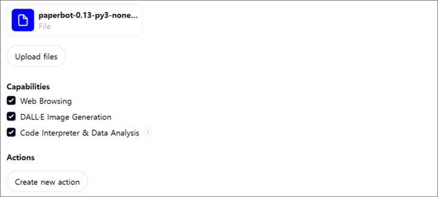

- 두달 전, 논문봇을 만들었고 잘 쓰고 있습니다.
- scispace와 일장일단이 있는데, 가장 큰 장점은 내 스타일을 반영할 수 있다는 점입니다.
- 그런데 보고서 출력시 프롬프트 반영이 랜덤입니다. 이를 해소했습니다.
1. 논문봇 v1
- 낯선 단어가 뒤덮은 논문의 내용을 읽기 전에 파악할 수 있다는 것은 참으로 편리합니다.
- 내 논문읽기 스타일에 맞게 주요 내용을 추출하면,
- 정독할 논문과 그렇지 않은 논문, 발췌독을 한다면 어떤 부분을 발췌할지 빠르게 판단할 수 있습니다.
- 논문봇 자체가 GPT에 얹혀있으므로 관련된 질문을 이어서 진행하기도 좋습니다.
- 논문봇은 주요 내용을 화면에만 출력하는 것이 아니라 보고서로도 만들어줍니다.
- DB는 아니더라도 obsidian 등 정보 관리 프로그램의 도움을 얻어 훗날 기억 복원에 쓰고자 하며,
- 발표자료 작성 등 2차 가공이나 팀내 공유 등에 활용하기 위함입니다.
- 그런데 프롬프트가 엄격히 적용되지 않아 형식이 조금씩 들쭉날쭉합니다.
- 사람이 보기에는 문제가 없을지 몰라도 나중에 기계로 처리하자면 골칫거리가 될 것입니다.
- 가끔은 그냥 눈으로 보기에도 크게 거슬립니다.
- GPT의 확장성을 이용해서 개선해 봅시다.
2. 논문봇 v2
- 논문봇 v1의 프롬프트는 크게 두 부분으로 구성되어 있습니다.
- 앞 부분은 논문의 내용을 파악하는 부분,
- 뒷 부분은 파악된 논문을 정리하는 부분입니다.
- 앞 부분은 그대로 두고, 맨 마지막 논문을 보고서로 정리하는 부분만 수정합니다.
- 우리의 목적은 재현성이고, 재현성에는 코드 실행 만한 게 없습니다.
- 그런데 코드는 입력, 동작, 출력으로 이루어져 있습니다.
- 동작을 고치기에 앞서 입력에 들어갈 데이터를 챙깁니다.
- 형식만 지정하던 앞 부분에 비어있던 변수명을 넣어주고,
- 방법론, 독창성, 한계점 등 여러 항목이 나오는 것들을 list로 묶으라고 지시합니다.
- 표로 표현되는 주요 참고문헌은 형식이 복잡할 수 있습니다. list of dictionary로 지정합니다.

- 입력이 준비되었으니 출력을 만드는 코드를 준비합니다.
- 논문봇의 출력은 .docx파일입니다.
- GPT의 도움을 받아 원하는 형식으로 서식을 만드는 코드를 작성합니다.
- doi link를 거는 등 작업으로 인해 400줄이 넘어 숨겨두었습니다.
코드 보기/접기
1
2
3
4
5
6
7
8
9
10
11
12
13
14
15
16
17
18
19
20
21
22
23
24
25
26
27
28
29
30
31
32
33
34
35
36
37
38
39
40
41
42
43
44
45
46
47
48
49
50
51
52
53
54
55
56
57
58
59
60
61
62
63
64
65
66
67
68
69
70
71
72
73
74
75
76
77
78
79
80
81
82
83
84
85
86
87
88
89
90
91
92
93
94
95
96
97
98
99
100
101
102
103
104
105
106
107
108
109
110
111
112
113
114
115
116
117
118
119
120
121
122
123
124
125
126
127
128
129
130
131
132
133
134
135
136
137
138
139
140
141
142
143
144
145
146
147
148
149
150
151
152
153
154
155
156
157
158
159
160
161
162
163
164
165
166
167
168
169
170
171
172
173
174
175
176
177
178
179
180
181
182
183
184
185
186
187
188
189
190
191
192
193
194
195
196
197
198
199
200
201
202
203
204
205
206
207
208
209
210
211
212
213
214
215
216
217
218
219
220
221
222
223
224
225
226
227
228
229
230
231
232
233
234
235
236
237
238
239
240
241
242
243
244
245
246
247
248
249
250
251
252
253
254
255
256
257
258
259
260
261
262
263
264
265
266
267
268
269
270
271
272
273
274
275
276
277
278
279
280
281
282
283
284
285
286
287
288
289
290
291
292
293
294
295
296
297
298
299
300
301
302
303
304
305
306
307
308
309
310
311
312
313
314
315
316
317
318
319
320
321
322
323
324
325
326
327
328
329
330
331
332
333
334
335
336
337
338
339
340
341
342
343
344
345
346
347
348
349
350
351
352
353
354
355
356
357
358
359
360
361
362
363
364
365
366
367
368
369
370
371
372
373
374
375
376
377
378
379
380
381
382
383
384
385
386
387
388
389
390
391
392
393
394
395
396
397
398
399
400
401
402
403
404
405
406
407
408import docx
from docx import Document
from docx import opc
from docx.oxml.ns import qn
from docx.oxml import OxmlElement
from datetime import datetime
from docx.shared import Inches, Pt, RGBColor
from docx.enum.text import WD_ALIGN_PARAGRAPH
import sys, os
# head
font_header_name = "Calibri"
font_header_size = Pt(14)
font_header_color = RGBColor(64, 64, 64)
# chapter
font_chapter_name = "Calibri"
font_chapter_size = Pt(12)
font_chapter_color = RGBColor(128, 128, 128)
# body
font_body_name = "Calibri"
font_body_size = Pt(10)
font_body_color = RGBColor(0, 0, 0)
def insertHR(paragraph, color):
p = paragraph._p # p is the <w:p> XML element
pPr = p.get_or_add_pPr()
pBdr = OxmlElement('w:pBdr')
pPr.insert_element_before(pBdr,
'w:shd', 'w:tabs', 'w:suppressAutoHyphens', 'w:kinsoku', 'w:wordWrap',
'w:overflowPunct', 'w:topLinePunct', 'w:autoSpaceDE', 'w:autoSpaceDN',
'w:bidi', 'w:adjustRightInd', 'w:snapToGrid', 'w:spacing', 'w:ind',
'w:contextualSpacing', 'w:mirrorIndents', 'w:suppressOverlap', 'w:jc',
'w:textDirection', 'w:textAlignment', 'w:textboxTightWrap',
'w:outlineLvl', 'w:divId', 'w:cnfStyle', 'w:rPr', 'w:sectPr',
'w:pPrChange'
)
bottom = OxmlElement('w:bottom')
bottom.set(qn('w:val'), 'single')
bottom.set(qn('w:sz'), '12')
bottom.set(qn('w:space'), '1')
bottom.set(qn('w:color'), color)
pBdr.append(bottom)
# Helper function to add hyperlink (since python-docx does not directly support hyperlinks)
def add_hyperlink(paragraph, url, text, color="#0000ff", underline=True):
"""
A function that places a hyperlink within a paragraph object.
:param paragraph: The paragraph we are adding the hyperlink to.
:param url: A string containing the required url
:param text: The text displayed for the url
:return: The hyperlink object
"""
# This gets access to the document.xml.rels file and gets a new relation id value
part = paragraph.part
r_id = part.relate_to(url, docx.opc.constants.RELATIONSHIP_TYPE.HYPERLINK, is_external=True)
# Create the w:hyperlink tag and add needed values
hyperlink = docx.oxml.shared.OxmlElement('w:hyperlink')
hyperlink.set(docx.oxml.shared.qn('r:id'), r_id, )
# Create a w:r element
new_run = docx.oxml.shared.OxmlElement('w:r')
# Create a new w:rPr element
rPr = docx.oxml.shared.OxmlElement('w:rPr')
# Add color if it is given
if not color is None:
c = docx.oxml.shared.OxmlElement('w:color')
c.set(docx.oxml.shared.qn('w:val'), color)
rPr.append(c)
# Remove underlining if it is requested
if not underline:
u = docx.oxml.shared.OxmlElement('w:u')
u.set(docx.oxml.shared.qn('w:val'), 'none')
rPr.append(u)
# Join all the xml elements together add add the required text to the w:r element
new_run.append(rPr)
new_run.text = text
hyperlink.append(new_run)
paragraph._p.append(hyperlink)
return hyperlink
def apply_style(paragraph, style, font_name=None, font_size=None, font_color=None):
if style == "header":
paragraph.style.font.name = font_header_name
paragraph.style.font.size = font_header_size
paragraph.style.font.color.rgb = font_header_color
elif style == "chapter":
paragraph.style.font.name = font_chapter_name
paragraph.style.font.size = font_chapter_size
paragraph.style.font.color.rgb = font_chapter_color
elif style == "body":
paragraph.style.font.name = font_body_name
paragraph.style.font.size = font_body_size
paragraph.style.font.color.rgb = font_body_color
# custom paragraph setting
if font_name:
paragraph.style.font.name = font_name
if font_size:
paragraph.style.font.size = font_size
if font_color:
paragraph.style.font.color.rgb = font_color
def init_doc(title, year, authors, journal="", volume="", issue="", pageRange="", articleNo="", doi=""):
# Create a new Document
doc = Document()
# Set title
para_title = doc.add_heading(title, 1)
para_title.style.font.name = font_header_name
para_title.style.font.size = font_header_size
para_title.style.font.color.rgb = font_header_color
insertHR(para_title, "#808096")
# Add authors and journal information
para_authors = doc.add_paragraph(style='List Bullet')
para_authors.paragraph_format.left_indent = Inches(0.5)
para_authors.style.font.name = font_body_name
para_authors.style.font.size = font_body_size
para_authors.style.font.color.rgb = font_body_color
run = para_authors.add_run(authors)
run.italic=True
journal_info = f"{journal} {volume}"
if issue and len(issue) > 1:
journal_info += f", ({issue})"
if pageRange and len(pageRange) > 1:
journal_info += f", {pageRange}"
if articleNo and len(articleNo) > 1:
journal_info += f", {articleNo}"
journal_info += f" ({year})"
para_journal_info = doc.add_paragraph(journal_info, style="List Bullet")
para_journal_info.paragraph_format.left_indent = Inches(0.5)
para_journal_info.style.font.name = font_body_name
para_journal_info.style.font.size = font_body_size
para_journal_info.style.font.color.rgb = font_body_color
# doi and link
if len(doi) > 1 and not doi.startswith("https://doi.org/"):
doi = "https://doi.org/" + doi
elif len(doi) > 1 and doi.startswith("https://doi.org/"):
doi = doi
if len(doi) > 1:
para_doi = doc.add_paragraph("DOI: ", style="List Bullet")
para_doi.paragraph_format.left_indent = Inches(0.5)
para_doi.style.font.name = font_body_name
para_doi.style.font.size = font_body_size
para_doi.style.font.color.rgb = font_body_color
add_hyperlink(para_doi, doi, doi)
else:
pass
# empty line
run = para_doi.add_run()
run.add_break()
return doc
def set_cell_border(cell, **kwargs):
"""
Set cell border
"""
tc = cell._tc
tcPr = tc.get_or_add_tcPr()
for edge in ['top', 'left', 'bottom', 'right']:
edge_data = kwargs.get(edge)
if edge_data:
tag = 'w:{}'.format(edge)
element = OxmlElement(tag)
element.set(qn('w:val'), edge_data.get('val', 'single'))
element.set(qn('w:sz'), str(edge_data.get('sz', 4)))
element.set(qn('w:space'), str(edge_data.get('space', 0)))
color = edge_data.get('color', 'auto')
if isinstance(color, tuple):
color = '%02x%02x%02x' % color
element.set(qn('w:color'), color)
tcPr.append(element)
def add_reference_table(doc, references):
for ref in references:
table = doc.add_table(rows=1, cols=1)
table.style = 'Table Grid'
cell = table.cell(0, 0)
# Set cell border with gray color
gray_color = (128, 128, 128)
set_cell_border(
cell,
top={"sz": 4, "val": "single", "color": gray_color},
bottom={"sz": 4, "val": "single", "color": gray_color},
start={"sz": 4, "val": "single", "color": gray_color},
end={"sz": 4, "val": "single", "color": gray_color}
)
# Add citation point
p_point = cell.paragraphs[0]
run = p_point.add_run(f" ※ {ref['citation point']}")
p_point.style.font.name = font_body_name
p_point.style.font.size = font_body_size
# p_point.style.font.color.rgb = RGBColor(64, 128, 128)
run.bold = True
# Add authors
p = cell.add_paragraph(style="List Bullet")
p.paragraph_format.left_indent = Inches(0.5)
if isinstance(ref['authors'], list):
ref['authors'] = ", ".join(ref['authors'])
else:
pass
p.add_run(f"{ref['authors']}")
p.style.font.name = font_body_name
p.style.font.size = font_body_size
p.style.font.color.rgb = font_body_color
# Add title
p = cell.add_paragraph(style="List Bullet")
p.add_run(f"\"{ref['title']}\"")
p.paragraph_format.left_indent = Inches(0.5)
p.style.font.name = font_body_name
p.style.font.size = font_body_size
p.style.font.color.rgb = font_body_color
# Add journal and year
p = cell.add_paragraph(style="List Bullet")
run = p.add_run(f"{ref['journal']} ")
run.italic = True
p.add_run(f"({ref['year']}). ")
p.paragraph_format.left_indent = Inches(0.5)
p.style.font.name = font_body_name
p.style.font.size = font_body_size
p.style.font.color.rgb = font_body_color
# Add DOI with hyperlink
add_hyperlink(p, f"https://doi.org/{ref['doi']}", ref['doi'])
# Add empty line
cell.add_paragraph()
return doc
def add_content(doc, purpose, contribution_academic, contribution_industrial, method_names, method_explanations,
originality_names, originality_explanations, limitation_names, limitation_explanations, references):
# Research purpose
para = doc.add_paragraph()
run = para.add_run("1. 연구 목적")
run.bold = True
para.style.font.name = font_chapter_name
para.style.font.size = font_chapter_size
para.style.font.color.rgb = font_chapter_color
para_purpose = doc.add_paragraph(style="List Bullet")
para_purpose.paragraph_format.left_indent = Inches(0.5)
para_purpose.add_run(purpose)
apply_style(para_purpose, "body")
# Academic and Industrial Contributions
para = doc.add_paragraph()
run = para.add_run("2. 학문적 및 산업적 기여")
run.bold = True
para.style.font.name = font_chapter_name
para.style.font.size = font_chapter_size
para.style.font.color.rgb = font_chapter_color
para_contribution_academic = doc.add_paragraph(style="List Bullet")
para_contribution_academic.paragraph_format.left_indent = Inches(0.5)
para_contribution_academic.style.font.name = font_body_name
para_contribution_academic.style.font.size = font_body_size
para_contribution_academic.style.font.color.rgb = font_body_color
run = para_contribution_academic.add_run("학문적 기여: ")
run.bold = True
if isinstance(contribution_academic, list):
para_contribution_academic.add_run(
*contribution_academic
)
else:
para_contribution_academic.add_run(
contribution_academic
)
para_contribution_industrial = doc.add_paragraph(style="List Bullet")
para_contribution_industrial.paragraph_format.left_indent = Inches(0.5)
para_contribution_industrial.style.font.name = font_body_name
para_contribution_industrial.style.font.size = font_body_size
para_contribution_industrial.style.font.color.rgb = font_body_color
run = para_contribution_industrial.add_run("산업적 기여: ")
run.bold = True
if isinstance(contribution_industrial, list):
para_contribution_industrial.add_run(
*contribution_industrial,
)
else:
para_contribution_industrial.add_run(
contribution_industrial,
)
# Methods
para = doc.add_paragraph()
run = para.add_run("3. 방법론")
run.bold = True
para.style.font.name = font_chapter_name
para.style.font.size = font_chapter_size
para.style.font.color.rgb = font_chapter_color
for name, expl in zip(method_names, method_explanations):
para_method = doc.add_paragraph(style="List Bullet")
para_method.paragraph_format.left_indent = Inches(0.5)
para_method.style.font.name = font_body_name
para_method.style.font.size = font_body_size
para_method.style.font.color.rgb = font_body_color
run = para_method.add_run(f"{name}: ")
run.bold = True
para_method.add_run(
expl
)
# Originality
para = doc.add_paragraph()
run = para.add_run("4. 독창성")
run.bold = True
para.style.font.name = font_chapter_name
para.style.font.size = font_chapter_size
para.style.font.color.rgb = font_chapter_color
for name, expl in zip(originality_names, originality_explanations):
para_originality = doc.add_paragraph(style="List Bullet")
para_originality.paragraph_format.left_indent = Inches(0.5)
para_originality.style.font.name = font_body_name
para_originality.style.font.size = font_body_size
para_originality.style.font.color.rgb = font_body_color
run = para_originality.add_run(f"{name}: ")
run.bold = True
para_originality.add_run(
expl
)
# Limitation
para = doc.add_paragraph()
run = para.add_run("5. 한계점")
run.bold = True
para.style.font.name = font_chapter_name
para.style.font.size = font_chapter_size
para.style.font.color.rgb = font_chapter_color
for name, expl in zip(limitation_names, limitation_explanations):
para_limitation = doc.add_paragraph(style="List Bullet")
para_limitation.paragraph_format.left_indent = Inches(0.5)
para_limitation.style.font.name = font_body_name
para_limitation.style.font.size = font_body_size
para_limitation.style.font.color.rgb = font_body_color
run = para_limitation.add_run(f"{name}: ")
run.bold = True
para_limitation.add_run(
expl
)
# References
para = doc.add_paragraph()
run = para.add_run("6. 주요 레퍼런스")
run.bold = True
para.style.font.name = font_chapter_name
para.style.font.size = font_chapter_size
para.style.font.color.rgb = font_chapter_color
doc = add_reference_table(doc, references)
return doc
def save_doc(doc, authors, journal, year):
# Save the document
today_date = datetime.today().strftime('%Y%m%d')
if isinstance(authors, str):
authors = authors.split(",")
filename = f"{today_date}_{authors[0].replace(' ', '')}_{journal.replace(' ', '')}_{year}.docx"
working_path = os.getcwd()
filename = os.path.join(working_path, filename)
doc.save(filename)
return filename
def gen_doc(title, year, authors, journal="", volume="", issue="", pageRange="", articleNo="", doi="",
purpose="", contribution_academic="", contribution_industrial="", method_names=[], method_explanations=[],
originality_names=[], originality_explanations=[], limitation_names=[], limitation_explanations=[], references=[]):
doc = init_doc(title, year, authors, journal, volume, issue, pageRange, articleNo, doi)
doc = add_content(doc, purpose, contribution_academic, contribution_industrial, method_names, method_explanations, originality_names, originality_explanations, limitation_names, limitation_explanations, references)
filename = save_doc(doc, authors, journal, year)
print(f"Document created: {filename}")
return filename
- 문서를 초기화하고(
init_doc), 내용을 추가한 후(add_content), 파일로 저장하는(save_doc) 3단 구성입니다. - 조금 많이 아쉬운 점이 있는데, hard coding이 심하게 되어 있다는 점입니다.
- 사용자가 추출 프롬프트를 수정함에 따라 동적으로 반응하는 코드를 짰으면 좋았을텐데,
- 구성을 조금 더 체계적으로 하지 못한 탓입니다.
- 다음 번 작업으로 미루도록 해야겠습니다.
코드의 마지막 부분은 파일명을 출력하게 되어 있습니다.
save_doc()코드는 다음과 같습니다.1
2
3
4
5
6
7
8
9
10
11
12
13def save_doc(doc, authors, journal, year):
# Save the document
today_date = datetime.today().strftime('%Y%m%d')
if isinstance(authors, str):
authors = authors.split(",")
filename = f"{today_date}_{authors[0].replace(' ', '')}_{journal.replace(' ', '')}_{year}.docx"
working_path = os.getcwd()
filename = os.path.join(working_path, filename)
doc.save(filename)
return filenamefilename에working_path를 붙이는 부분이 있는데,종종 입력 논문은
/mnt/data/에 올라가는 데 반해파일 출력은
/home/sandbox/에 실행해 놓고,/mnt/data/로 시작하는 링크를 줄 때가 생기기 때문입니다.이러면 파일을 출력했는데 다운로드 링크가 동작하지 않는 상황이 되어 몹시 난감합니다.
- 이제 GPTs Knowledge에 이 코드를 올리고 실행할 차례입니다.
- 아래 그림과 같이 .py를 올리고 아래의 Code Interpreter & Data Analysis를 체크합니다.
- 이제 프롬프트에 파일 출력시 이 코드를 실행하라고 하면 될 것 같은데,
- 제대로 안 돌아갑니다.
- 오작동인지 알 수 없으나 경험상 50% 이상의 확률로 실행되지 않습니다.
- PDF를 찾기 전에는 잘 읽던 .py 파일을 PDF를 읽은 뒤엔 못 찾습니다.
- 대신, .py 대신 .whl(다운로드)로 만들어 올리면 잘 동작합니다.

- 이제 프롬프트를 여기에 맞게 수정합니다.
- .whl 파일을 설치하고 실행하도록 코드를 적어줍니다.
3. 테스트
- 논문봇에 2010년 논문을 한 편 넣어봅니다.
- 자율화실험실(autonomous lab)의 선조격인 논문입니다.
- 논문봇이 정상적으로 .docx 파일을 출력했고 ([다운로드],(20240819_AndrewSparkes_AutomatedExperimentation_2010.docx))
- 보고서 구성은 다음과 같습니다.
- 한 논문을 여러 차례 입력해도,
- 다른 논문들을 차례차례 입력해도 형식 재현성이 확보되었습니다.